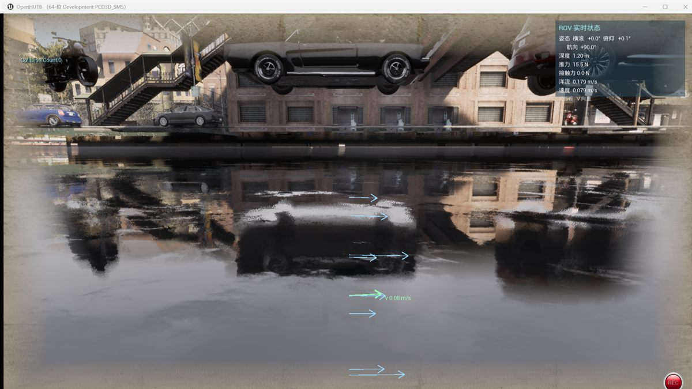

水下机器人（ROV）仿真
HUTB 的水下机器人（ROV）仿真由三部分组成：MuJoCo 负责动力学与流体计算，虚幻引擎负责场景渲染，AirSim 负责位姿跟随与 RPC 接口。三者运行在同一个进程中，MuJoCo 是位姿真值源，虚幻引擎中的 ROV 只是它的跟随者，不做二次物理积分。
水下内容（水面、雾、后处理、海床、ROV 模型）已经合并进地图 Town10HD，不需要额外加载水下关卡。
组成
| 部分 | 作用 |
|---|---|
| MuJoCo | 动力学、流体阻力、浮力、接触（500 Hz） |
| 虚幻引擎 | 场景渲染、相机、HUD |
| AirSim | 位姿跟随与 RPC 接口（默认端口 41451） |
准备
使用安装包
- 安装
OpenHUTBUnderwaterStudio_<版本>_Setup.exe - 安装程序会把 ROV 配置写入
文档\AirSim\settings.json - 双击安装目录下的
CarlaUE4.exe启动
从源码运行
需要两个仓库：hutb 提供代码，Content 提供资产（地图、模型、材质）。
| 仓库 | 地址 |
|---|---|
| hutb | https://github.com/OpenHUTB/hutb |
| Content | https://git.code.tencent.com/OpenHUTB/Content |
# 1. 代码
git clone https://github.com/OpenHUTB/hutb.git
cd hutb
# 2. 资产，放到工程的 Content 目录
git clone https://git.code.tencent.com/OpenHUTB/Content.git Unreal/CarlaUE4/Content
# 3. 初始化、编译、启动
setup.bat -l
资产仓库使用 Git LFS，克隆后如果出现 0 字节文件，在 Content 目录执行 git lfs pull。
显式配置 ROV
ROV 模式由 AirSim 配置文件中的 SimMode 决定。配置文件有两处，优先读取工程目录：
| 位置 | 说明 |
|---|---|
Unreal/CarlaUE4/settings.json |
工程内，优先级最高 |
文档\AirSim\settings.json |
用户目录，安装包写入的就是这里 |
仓库自带一份 ROV 配置 settings_rov.json，直接覆盖即可：
copy Unreal\CarlaUE4\settings_rov.json Unreal\CarlaUE4\settings.json
关键字段如下：
{
"SettingsVersion": 1.2,
"SimMode": "Rov",
"Vehicles": {
"RovSimple": {
"VehicleType": "RovSimple",
"PawnPath": "DefaultRov",
"EnableCollisions": true,
"AllowAPIAlways": true
}
}
}
| 字段 | 作用 |
|---|---|
SimMode |
必须是 "Rov"，否则启动的是无人机 |
Vehicles.RovSimple.VehicleType |
RovSimple，ROV 的固件类型 |
PawnPath |
DefaultRov，对应 RovPawn |
AllowAPIAlways |
允许外部 API 控制 |
配置只在启动时读取一次，修改后需要重启。
启动
编辑器
cd <hutb 仓库根目录>
.\run_underwater_scene.bat
脚本会自动备份 settings.json、换成 ROV 配置、启动编辑器，退出后再还原。手动启动等价于：
UE4Editor.exe Unreal\CarlaUE4\CarlaUE4.uproject /Game/Carla/Maps/Town10HD `
-game -windowed -resx=1600 -resy=900
打包版
双击安装目录下的 CarlaUE4.exe。首次启动约需 1–2 分钟（着色器缓存），属正常现象。
操作
| 按键 | 功能 |
|---|---|
W / S |
前进 / 后退 |
A / D |
左移 / 右移 |
Q / E |
上浮 / 下潜 |
← / → |
左转 / 右转 |
Z |
锁定当前深度（再按解除） |
R |
显示 / 隐藏状态面板 |
V |
显示 / 隐藏力与速度向量 |
B / F / M |
追尾视角 / 第一人称 / 手动 |
状态面板位于屏幕右上角，显示姿态、深度、推力、接触力、洋流和速度。

确认是否生效
编辑器日志在 Saved/Logs/CarlaUE4.log，打包版在 CarlaUE4/Saved/Logs/。启动后应出现以下四行：
[RovMuJoCoBridge] ✅ 桥接已启用，跟随 body 'rov'
[RovScene] 障碍物 9 个（管道/框架/礁石）
[RovScene] 实时状态面板已启用
[RovBridge][姿态] 物理线程级联控制启用（500 Hz），锁定航向 90.0°
画面上应能看到右上角的状态面板、水面色调与水下雾效；按 W 时 ROV 前进。
Python 控制
ROV 使用 airsim.RovClient，状态用 getRovState() 获取：
import airsim
client = airsim.RovClient()
client.confirmConnection()
client.enableApiControl(True)
client.armDisarm(True)
state = client.getRovState()
print("位置:", state.kinematics_estimated.position)
需要注意：getMultirotorState() 属于多旋翼模式，ROV 模式下没有该方法，调用会报 AttributeError: 'VehicleClient' object has no attribute 'getMultirotorState'。
完整示例如下：
import airsim
import time
client = airsim.RovClient()
client.confirmConnection()
client.enableApiControl(True)
client.armDisarm(True)
print("初始位置:", client.getRovState().kinematics_estimated.position)
# 机体系速度：前进 0.5 m/s、下潜 0.2 m/s，持续 3 秒
client.moveByVelocityBodyFrameAsync(vx=0.5, vy=0.0, vz=0.2, duration=3).join()
time.sleep(1)
print("运动后位置:", client.getRovState().kinematics_estimated.position)
client.hoverAsync().join()
client.armDisarm(False)
client.enableApiControl(False)
常用接口：
| 方法 | 说明 |
|---|---|
getRovState() |
位姿、速度、着陆状态 |
moveByVelocityBodyFrameAsync(vx, vy, vz, duration) |
机体系速度控制 |
moveByVelocityZBodyFrameAsync(vx, vy, z, duration) |
机体系速度 + 定深 |
moveToPositionAsync(x, y, z, velocity) |
位置控制 |
moveByMotorPWMsAsync(pwm_values, duration) |
直接给推进器 PWM |
hoverAsync() |
悬停 |
getImuData() / getBarometerData() / getMagnetometerData() |
传感器 |
getImages() |
相机图像 |
RovClient 来自本仓库的 PythonClient，不是 PyPI 上的 airsim 包：
cd <air 仓库>\PythonClient
pip install -e .
安装后可用 hasattr(airsim, "RovClient") 确认是否为 True。
常见问题
| 现象 | 原因 | 处理 |
|---|---|---|
| 启动后是无人机 | settings.json 中 SimMode 不是 Rov |
用 settings_rov.json 覆盖，或运行 run_underwater_scene.bat |
| 地图里没有水，看不到水下效果 | Content 资产未更新 | 在 Unreal/CarlaUE4/Content 下执行 git pull 与 git lfs pull |
| 看不到 ROV | ROV 出生在水下，相机在水面以上 | 按 B 切换追尾视角，或用 E 下潜 |
getMultirotorState 报 AttributeError |
使用了多旋翼客户端 | 改用 airsim.RovClient() 与 getRovState() |
confirmConnection 超时 |
仿真未启动或端口被占用 | 确认已进入场景；默认端口 41451 |
| 姿态缓慢翻转 | 旧版本姿态环运行在游戏线程 | 升级到 1.2.9 及以上 |
| 状态面板不显示 | 按 R 隐藏了面板 |
再按一次 R |